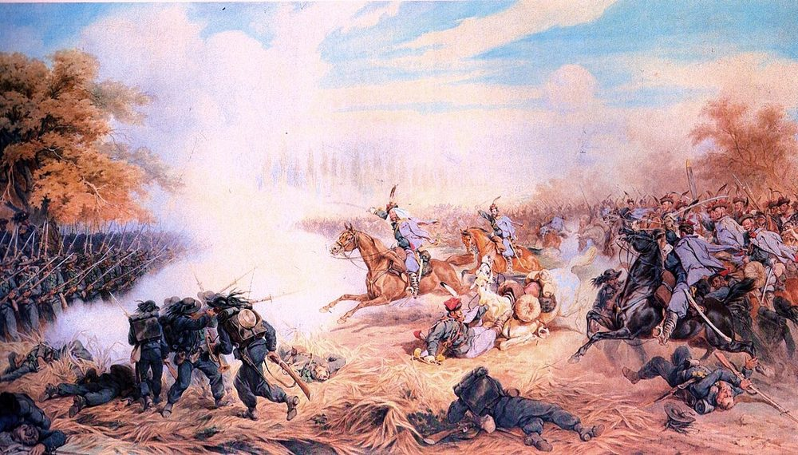

全堂区 · 1799–1920年 · 取材于登记簿的新故事
皇帝的士兵
从18世纪末起，堂区农民的儿子们就在奥地利皇帝的军队中服役。死亡登记簿记下了带病归来的人、死在远离家乡之地的人，还有途经 Dobra 时死去的外地士兵。
在 Claude 的协助下译自波兰语原文。登记簿引文保留原文，并附译文。
波兰被瓜分之后，堂区划入了奥地利君主国的加利西亚，农家的儿子们开始被征入皇帝的军队。兵役期很长。死亡登记簿没有说我们这些村子有多少男人参了军，但记下了那些病着回来的人、那些客死他乡的人，以及途经 Dobra 时死去的外地士兵。

军队查阅登记簿
1799年2月18日和19日，有人用另一种笔迹在 Jurków、Dobra 和 Półrzeczki 的死亡登记簿条目下方补写了同样的套语和签名。在 Półrzeczki 签名的是一位中尉。军队依据堂区登记簿来校正自己的征兵名册。它必须知道哪些男人还活着。
摘自 Jurków 的死亡登记簿，1799年2月
Rectificatio Conscriptionale Milit. fact. die 18 Feb. 799
军队征兵登记的校正，于1799年2月18日完成。
Jurków 死亡登记簿 1786–1849 · 档号 4268/5520 · 扫描件 008 · 查看扫描件 ↗
病着回家的人
1833–1895年间，登记簿记下了二十多名死在堂区或堂区附近的士兵。他们大多是未婚的年轻人，死于肺痨和肺炎。神父在他们名下记下了所属的团、营和连。
- Dobra · 1833Józef Bolisęga，人称 Jarosz，21岁，卡尔大公第3枪骑兵团第2中队列兵。
- Jurków · 1838Jan Smoleń，32岁，隶属帝国皇家第20步兵团的地方防卫军（Landwehr）士兵。死于伤寒。
- Chyszówki · 1839Stanisław Czopek，25岁，帝国皇家第57步兵团列兵。死于肺痨。
- Dobra · 1844Jan Przybytek，41岁，第20团地方防卫军士兵。人们在 Tymbark 发现了他的尸体，他就葬在那里。
登记簿中出现最多的是帝国皇家第20步兵团。1847年，该团驻 Nowy Sącz 的军医 Jan Melichar 不满两岁的儿子 Gustaw Antoni 死在了 Dobra。
有些人服役多年后，作为持有“证书”的伤残军人回到村里；这种官方证书使他们有权领取一笔微薄的补助。神父把他们记为“patentalis invalidus”。1824–1899年间，登记簿里有十几个这样的人。Jurków 的伤残军人、鳏夫 Jan Smoleński 于1868年寿终，终年84岁。
远离家乡
另一些人只留下了一纸公文。Chyszówki 的枪骑兵 Jan Zawada 在维也纳的军医院死于肺痨。消息是经由 Limanowa 的帝国皇家县政府传到堂区的。
摘自 Chyszówki 的死亡登记簿，1873年6月9日
Joannes Zawada miles c. r. Legionis Ulanorum coelebs … juxta Relationem C. R. Capitaneatus Limanoviensis de dto 4 Julii 873 No 3139 in Nosocomio militari Vindobonae
Jan Zawada，帝国皇家枪骑兵团士兵，未婚，26岁。根据 Limanowa 帝国皇家县政府1873年7月4日第3139号公函，死于维也纳的军医院。
Chyszówki 死亡登记簿 1853–1926 · 档号 4269/5505 · 扫描件 015 · 查看扫描件 ↗
也有反过来的情况。1855年8月7日，卡尔·斐迪南大公第51步兵团第11连的士兵 Maciej Kozma 在 Dobra 死于霍乱。他生于特兰西瓦尼亚。神父补写道，他死于“in transitu cum cohorte”，即随部队行军途中。这正是《来自维也纳的医生》这篇故事讲到的那个霍乱肆虐的夏天。1916年，Dobra 的登记簿记下了42岁的士兵 Jan Mariasz 的死亡，他生于 Jasło 附近的 Sieklówka Górna。
大战
第一次世界大战中阵亡的人，登记簿是从军方公函中得知的，往往要过好几年。Chyszówki 的登记簿里有三条这样的记录。
- 1914年11月27日Józef Smoleń，生于1890年，第20步兵团中士，阵亡于 Nida 河畔。1919年5月，第1 Podhale 步兵团的补充营从 Nowy Sącz 寄来了通知。
- 1917年2月6日Stanisław Tomera，Pankracy 和 Katarzyna Mrozek 之子，19岁，在罗马尼亚 Capotesti 附近的战斗中阵亡，并葬在那里。直到1925年他才被记入登记簿。
- 1918年7月4日Józef Smoleń，生于1894年，帝国皇家第32步枪团步枪兵，农民，未婚。随军神父用德语通知说，他“an der ital. Front den Heldentod fand”，即在意大利前线英勇牺牲。

1920年，在对布尔什维克的战争中，Dobra 22岁的 Jakub Sołtys 阵亡，由随军神父安葬；Chyszówki 的 Stanisław Michałek 在与布尔什维克军队的战斗中阵亡。他们已经是波兰的士兵了。
可信程度
- 确定文中所引士兵的姓名、年龄、所属团队和死因。录文已与扫描件核对。
- 很可能1799年批注的含义（核对征兵名册），以及“patentalis invalidus”一词的含义。
- 待核实1855年那名士兵的名字和他在特兰西瓦尼亚的村庄；还有1920年那场战斗的地点，未能辨认出来。
尚不清楚的事
- 堂区有多少男人服过兵役，又有多少人回来了。登记簿只记死者。
- 一战中阵亡的人有多少没有被记入登记簿。Dobra 1914–1915年的登记簿里，没有一条阵亡记录。
资料来源
- 死亡登记簿：Jurków，档号 4268/5520（扫描件 008、038）和 4268/5525（扫描件 016）；Dobra，档号 4268/5505（扫描件 060、074）、4268/5510（扫描件 007、021）、3402/5510（扫描件 032）和 3402/5520（扫描件 005）；Chyszówki，档号 4269/5500（扫描件 036）和 4269/5505（扫描件 015、044–047）；Półrzeczki，档号 4269/5515（扫描件 006）；见波兰家谱学会（PTG）的 Metryki 网站。
- 《Chyszówki w księgach zmarłych 1786–1926》（《死亡登记簿里的 Chyszówki，1786–1926》，2026年），“Daleko od domu”（远离家乡）一章。